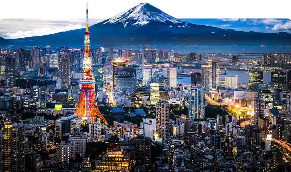

Tokyo, formerly (until 1868) Edo, city and capital of Tokyo to (metropolis) and of Japan. It is located at the head of Tokyo Bay on the Pacific coast of central Honshu. It is the focus of the vast metropolitan area often called Greater Tokyo, the largest urban and industrial agglomeration in Japan. Tokyo has been the capital of Japan since only 1868.
